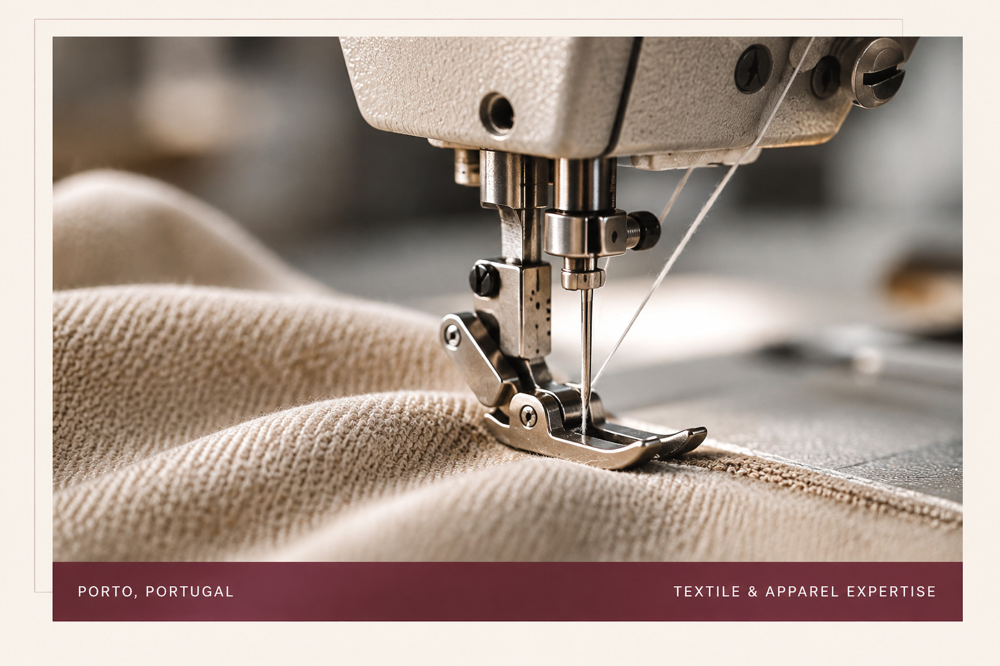
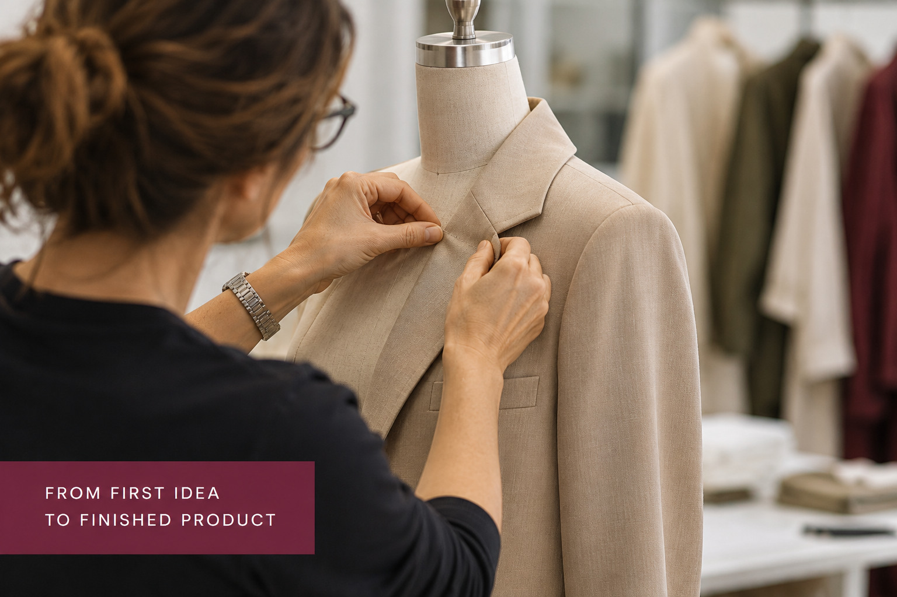
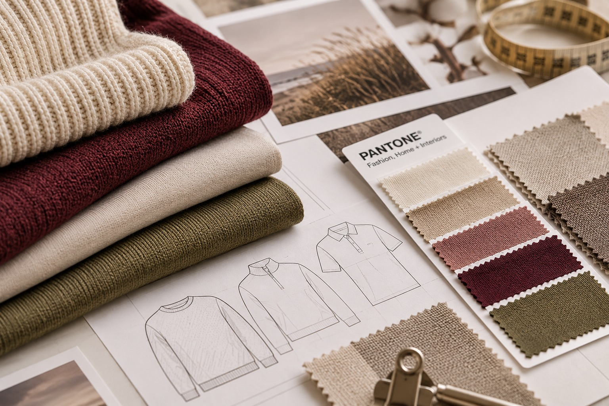

01
Product Development
From tech pack review and material selection to sample development, fit comments and approvals.
YOUR TEAM ON THE GROUND
Product development, sourcing and production management for fashion brands — with experienced, independent support at every stage.
Let’s talk about your next collection

A LOCAL PARTNER. AN EXTENSION OF YOUR TEAM.
Based in Porto, Portugal, SONYTEX is an independent production office supporting international fashion brands with product development, sourcing and production expertise.
With more than 30 years of experience in the textile, apparel and footwear industry, we combine technical knowledge, a carefully developed local network and hands-on follow-up throughout the process.
We work on our clients’ behalf, representing their interests in Portugal and helping turn collection requirements into well-managed production.
FOUNDED BY SÓNIA & JOSÉ MAGALHÃES
Practical, experienced support from early development through to bulk production.
From tech pack review and material selection to sample development, fit comments and approvals.
Finding suitable manufacturers, fabrics and trims around your product, quality and target-price requirements.
Coordinating production stages, communicating with suppliers and following progress, critical dates and delivery.
On-the-ground quality follow-up, measurement and workmanship checks, issue reporting and corrective-action support.

We support a broad range of apparel and footwear collections, adapting our sourcing and production approach to each brand’s needs.
We are not a factory or a sales representative for manufacturers. We work independently for our clients, with their priorities and interests at the centre of every decision.
Your requirements guide the process. We represent your interests in Portugal.
Technical understanding and practical knowledge built over decades in the industry.
Access to a carefully selected network of manufacturers and material partners.
Direct communication, hands-on follow-up and support shaped around your team.
Looking for experienced product development or production support in Portugal? We would be glad to hear about your plans.
Get in touch